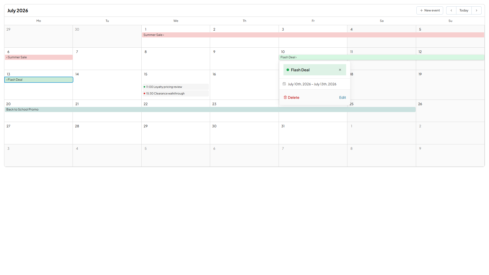
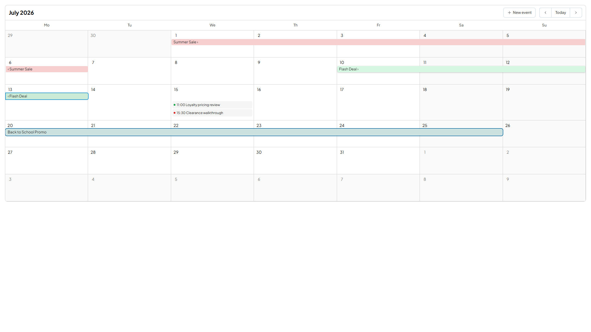

The popover opened by clicking an event chip rendered as a bare div.vc-popover with role = null and aria-label = null, and focus never entered it. Escape did close it and focus was on the chip afterwards, so there was no trap — the gap was role and naming plus focus entry.
The same .vc-popover component had already been given a dialog role and a localized name for the “+N more” overflow popover under VCST-5671, but at the overflow call site rather than in the shared component — so the quick-info call site still carried the original gap.
PR #350 gives all three anchored popovers role="dialog" and an accessible name, and moves focus entry/restore out of the overflow popover into a shared useAnchoredPanelFocus. Dialog semantics stay opt-in props on VcPopover — three call sites opting in, not a change of default.
The local clone sits at #349, which is exactly pre-#350, so each call site was reverted individually rather than by a blunt tag revert. That isolates this PR per call site.
RED-A — quick-info, the ticket's own defect. 4 failed / 12 passed.
× exposes the quick-info panel as a named dialog → false to be true × names the panel generically when the event has no title × moves focus into the panel when it opens → expected <body> to be <button> × hands focus back to the chip that opened it
RED-B — quick-create, the third call site the ticket flagged as never inspected. 1 failed / 3 passed.
× exposes the quick-create panel as a named dialog → false to be true
25 tests across the three files, GREEN 3/3. Live on the deployed Storybook, items 1/2/3/5 confirmed on four distinct events.
a11y tree, panel open:
dialog "Flash Deal"
→ role present, name = event title
button "Close" [active]
→ focus entered the panel
On close: focus restored to the EXACT
opener (e87), not the sibling segment
(e59). 3 clean closes across two close
paths — Escape, Close button, Escape.
Full framework suite with #350:
415 files / 4119 tests / 0 failures
RED-B is the point worth keeping. The ticket said quick-create “was NOT inspected — the scope of this defect may be wider than the quick-info popover alone.” The dev reported fixing it in the same change. RED-B measures that rather than accepting it.
The shared composable reads document.activeElement before the DOM patch, while the panel still exists. A tick later the node is gone, “is focus inside?” is false for every close, and focus gets yanked back even when the user deliberately moved on.
| Probe | Observation |
|---|---|
Open panel, Shift+Tab out to e154, Escape | focus STAYED on e154 — not yanked to the e92 opener |
| Open panel, Tab past document end, Escape | no reclaim |
| Mutation test — read moved to AFTER the patch | “returns focus to whatever held it before” FAILS; the other four stay green |
The mutation test is what makes the guard's own unit test evidence rather than decoration: it fails exactly when the timing is wrong and passes otherwise. Two further vacuous-pass risks the dev flagged were also closed — the VcPopover test stub does expose panelEl, matching the real component's defineExpose, so the focus assertions are not passing for free.
| # | Check | Result |
|---|---|---|
| 1 | role="dialog" present (pre-fix: null) | PASS |
| 2 | Accessible name is the event title | PASS |
| 3 | Focus moves to the close control on open | PASS |
| 4 | Focus returns to the chip on close | PASS 3/3 |
| 5 | A named dialog, not merely focusable | PASS |
| 6 | Untitled event names the panel “Event details” | NOT-RUN |
| 7 | User moved focus out first — no reclaim | PASS |
| 8 | VCST-5671 overflow popover not regressed | PASS* |
| 9 | Quick-create: dialog + “New event” + title-field focus | PASS |
| 10 | Escape still closes; still no trap | PASS |
| 11 | Edit/Delete still Tab-reachable | PASS |
| 12 | No new console errors | 0 errors |
| 13 | Story render sweep (22 stories) | PASS |
| 14 | axe-core scan | PASS† |
“Event details” fallback could not be exercised: quick-create's Save renders disabled on an empty title, the editor modal shares the same non-empty-title guard, the documented EmitMode empty-title path rendered no event at all, and no fixture ships an untitled event. It is unit-verified (RED-A covers it) and browser-unverified — which is exactly what keeps this run off a clean VERIFIED.aria-label="$t('VC_SCHEDULER.MORE_EVENTS')" → “More events”. Settled by diffing MonthMorePopover.vue at #349 against main: the name is identical at both, so #350 did not change it and VCST-5671 is not regressed — its focus entry and restore-to-“+1 more” still work too..vc-popover. But the pre-fix bare div would likely have scanned equally clean: axe cannot see a missing role on an element with no interactive semantics to contradict, nor a focus transition that never happens. Recorded as non-regression cover only, never as evidence the defect is fixed. The a11y tree and the focus probes are what carry this verdict.The marker here is content, not a version string, and it comes with a control — because on the sibling VCST-5803 run .docs.md prose turned out to be absent from this bundle entirely, making it an invalid marker that would have read as “fix not deployed”.
| Step | Observation |
|---|---|
| Ancestry | #350 (d1a02a5) → rc gitHead cb6379d: ahead_by 2, behind_by 0 |
| Served constant | preview bundle declares 2.6.0-rc.0 |
| Content marker | EVENT_DETAILS:"Event details" and de "Termindetails" both present |
| Proven new | 0 at v2.5.0, 0 at #349, 1 at main |
| Control | pre-existing ZOOM_OUT key also present — locale strings are bundled, so a zero would have been meaningful |

div with role: null, aria-label: null, and focus never entered it. The July 10th – July 13th range also shows VCST-5678's inclusive-end fix intact on the same surface.
activeElement read exists to protect.<body>. Pre-existing and not a #350 regression — pre-fix it had no focus management at all. Worth noting that this is the same defect class as VCST-5813 (focus dropped to body with no repair target), so it may belong with that line of work rather than filed alone.role="status" live regions inside an outer status "Loading events…" — a plausible announcement storm, unverifiable without an assistive-technology pass.aria-label="More events" replaces the visible date header, so a screen-reader user loses the date a sighted user sees — the same class as VCST-5803's 24-hour/12-hour chip mismatch. Out of this ticket's scope, and it is also why the dev's comment describing that name as “the formatted date” is inaccurate.